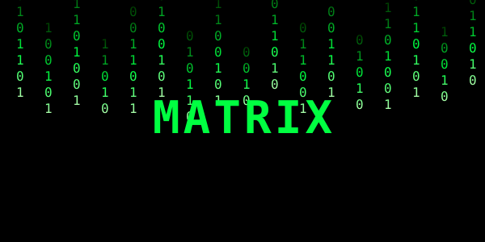

Matrix je naučnofantastični film iz 1999. godine. Prati Nea, programera koji otkriva da svijet u kojem živi nije stvaran.
Volim ga jer spaja akciju, filozofiju i odlične specijalne efekte koji su tada bili revolucionarni.